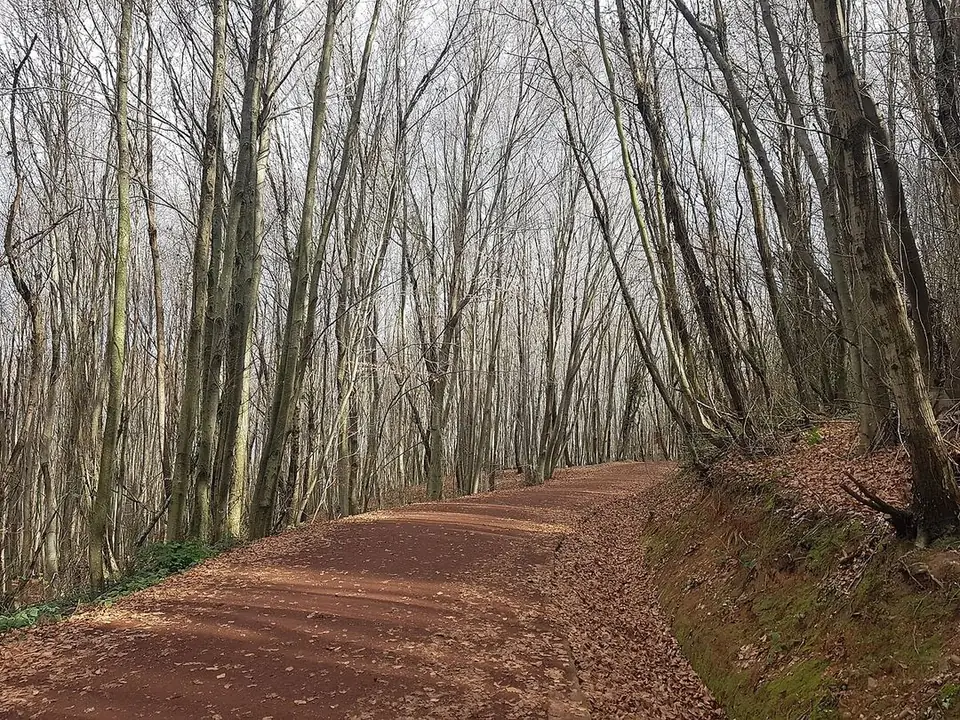

Adampol – Polonezköy
Park Przyrody Polonezköy
Spacer tym samym lasem, w który ponad 180 lat temu weszli pierwsi osadnicy Adampola – dziś to około 3000 hektarów chronionych dębów, kasztanów i buków.


- Temat
- Adampol – Polonezköy
- Dzielnica
- Beykoz
- Okres
- 1842 / 1994
- Zwiedzanie
- Otwarte dla zwiedzających
Historia
Pierwsi mieszkańcy Adampola zaczynali od siekier: wieś trzeba było wyrąbać w lesie, który dziś jest największym parkiem przyrody w Stambule. Ziemia, którą książę Czartoryski wziął w 1842 r. w wieczystą dzierżawę od lazarystów, leżała w głębi lasów azjatyckiego brzegu – według dawnych źródeł ok. 50 km od Stambułu. Źródła z pierwszych lat mówią o rosnącym obszarze wykarczowanej ziemi, pierwszych chałupach i pierwszych zbiorach.
Jak zwiedzać
Pinezka pokazuje wejście na szlak („Polonezköy Yürüyüş Yolu Girişi”) przy parkingu na zachodnim krańcu wsi, tuż za cmentarzem katolickim. Zasady wstępu i ewentualne opłaty ustala turecka Dyrekcja Generalna Ochrony Przyrody i Parków Narodowych – sprawdź je przed wizytą. Weź wygodne buty i wodę; po deszczu ścieżki bywają błotniste. W weekendy i święta park jest pełen rodzin z piknikami, w dzień powszedni jest cicho.
Dojazd: do Polonezköy nie dojeżdża kolej ani metro. Najprościej wziąć taksówkę z Kavacık lub Beykozu. Autobusy miejskie dojeżdżają do wsi, ale numery linii i rozkłady sprawdź przed wyjazdem na iett.istanbul lub w Moovit.
Postaci
- Michał Ławrynowicz
Położenie
Beykoz, Stambuł · Współrzędne: 41.11048, 29.20434